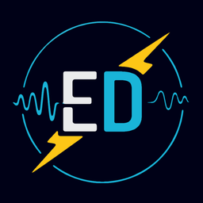

Esteban Denecken, PhD
Image Processing & Computer Vision
Biomedical Imaging · Segmentation · Signal Analysis.
Applied mathematics for real-world systems. Research Engineer, Chile 🇨🇱
★ Newsletter
Signals & Noise
Image processing fundamentals, and productivity through a signal-processing lens.
Subscribe
Workspace
Productivity Workspace
- No account required
- Your data stays on your device
- Markdown export
- Integrated planning, notes, and focus tools
Elsewhere
GitHubCode, notebooks, figure generators
→
InstagramImage processing, productivity and engineering
→
LinkedInResearch, engineering, career notes
→
Google ScholarCitations, co-authors, metrics
→
ORCIDPublications & academic record
→
Travel InstagramTravel photography
→
Demo
❤️ Buy me a coffee